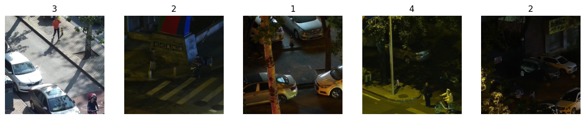
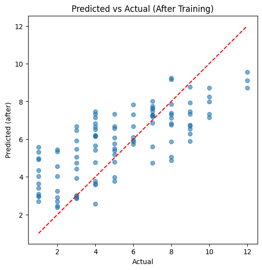
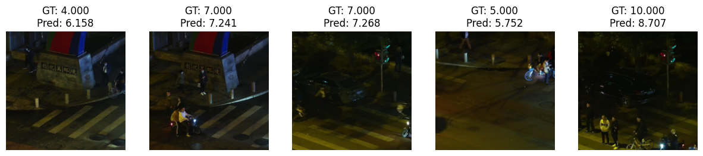

import os
import random
import pandas as pd
import numpy as np
import torch
import torch.nn as nn
from torch.utils.data import Dataset, DataLoader, Subset
from torchvision import transforms
from PIL import Image
import timm
import matplotlib.pyplot as plt
from tqdm import tqdmTutorial on Image Regression Using Dino-v3
Setup and Imports
from google.colab import drive
drive.mount('/content/drive')Mounted at /content/driveBATCH_SIZE = 32
VAL_SUBSET_SIZE = 500 # subset size for quick evaluation
EPOCHS = 5
LEARNING_RATE = 1e-3
NUM_WORKERS = 2
RANDOM_SEED = 42
IMAGE_SIZE = 224 # 224 is typical for vit / dinov3
BACKBONE_NAME = 'vit_base_patch16_dinov3'Accessing Local Dataset
IMAGE_DIR = "/content/drive/MyDrive/Dinov3Data/Images"
CSV_PATH = "/content/drive/MyDrive/Dinov3Data/human_count_rgb.csv"
OUTPUT_DIR = "/content/drive/MyDrive/DinoV3Data/Results"
os.makedirs(OUTPUT_DIR, exist_ok=True)def set_seed(seed=RANDOM_SEED):
random.seed(seed)
np.random.seed(seed)
torch.manual_seed(seed)
if torch.cuda.is_available():
torch.cuda.manual_seed_all(seed)
set_seed()Preprocessing Dataset
class ImageRegressionDataset(Dataset):
def __init__(self, csv_path, image_dir, transform=None):
self.df = pd.read_csv(csv_path)
assert 'filename' in self.df.columns and 'num_humans' in self.df.columns, \
"CSV must have 'filename' and 'num_humans' columns"
self.image_dir = image_dir
self.transform = transform
def __len__(self):
return len(self.df)
def __getitem__(self, idx):
row = self.df.iloc[idx]
img_path = os.path.join(self.image_dir, str(row['filename']).strip())
if not os.path.exists(img_path):
# try with extension if missing
for ext in ('.jpg','.jpeg','.png'):
alt = img_path + ext
if os.path.exists(alt):
img_path = alt
break
img = Image.open(img_path).convert('RGB')
if self.transform:
img = self.transform(img)
target = torch.tensor(float(row['num_humans']), dtype=torch.float32)
return img, targettransform = transforms.Compose([
transforms.Resize(IMAGE_SIZE),
transforms.CenterCrop(IMAGE_SIZE),
transforms.ToTensor(),
transforms.Normalize(mean=[0.485, 0.456, 0.406],
std=[0.229, 0.224, 0.225])
])
# load dataset
dataset = ImageRegressionDataset(CSV_PATH, IMAGE_DIR, transform=transform)
# Split into train and val (80/20)
n = len(dataset)
indices = list(range(n))
random.shuffle(indices)
split = int(0.8 * n)
train_indices, val_indices = indices[:split], indices[split:]
train_ds = Subset(dataset, train_indices)
val_ds = Subset(dataset, val_indices)
train_loader = DataLoader(train_ds, batch_size=BATCH_SIZE, shuffle=True, num_workers=NUM_WORKERS)
val_loader = DataLoader(val_ds, batch_size=BATCH_SIZE, shuffle=False, num_workers=NUM_WORKERS)val_subset_size = min(VAL_SUBSET_SIZE, len(val_ds))
val_subset_indices = np.random.choice(len(val_ds), val_subset_size, replace=False)
val_subset = Subset(val_ds, val_subset_indices)
val_subset_loader = DataLoader(val_subset, batch_size=BATCH_SIZE, shuffle=False, num_workers=NUM_WORKERS)def show_samples(dataset, num=5):
fig, axes = plt.subplots(1, num, figsize=(3*num, 3))
chosen = np.random.choice(len(dataset), num, replace=False)
for ax, i in zip(axes, chosen):
img, target = dataset[i]
# unnormalize for display
img_np = img.permute(1,2,0).numpy()
img_np = np.clip((img_np * np.array([0.229, 0.224, 0.225])) + np.array([0.485, 0.456, 0.406]), 0, 1)
ax.imshow(img_np)
ax.set_title(f"{int(target.item()):}")
ax.axis('off')
plt.show()
print('Showing sample images from training set:')
show_samples(train_ds, num=5)Showing sample images from training set:
Fine-tuning & Evaluation
class DinoRegressor(nn.Module):
def __init__(self, backbone_name=BACKBONE_NAME, pretrained=True, freeze_backbone=True):
super().__init__()
self.backbone = timm.create_model(backbone_name, pretrained=pretrained, num_classes=0, global_pool='avg')
feat_dim = self.backbone.num_features
self.head = nn.Sequential(
nn.Linear(feat_dim, 256),
nn.ReLU(inplace=True),
nn.Linear(256, 1)
)
if freeze_backbone:
for p in self.backbone.parameters():
p.requires_grad = False
def forward(self, x):
feats = self.backbone(x)
out = self.head(feats)
return out.squeeze(1)
device = torch.device('cuda' if torch.cuda.is_available() else 'cpu')
model = DinoRegressor(freeze_backbone=True).to(device)print('Model created. Trainable params:')
trainable = sum(p.numel() for p in model.parameters() if p.requires_grad)
total = sum(p.numel() for p in model.parameters())
print(f"{trainable} / {total} parameters are trainable")Model created. Trainable params:
197121 / 85838337 parameters are trainablefrom sklearn.metrics import mean_squared_error, r2_score
def predict_on_loader(model, loader):
model.eval()
preds, targets = [], []
with torch.no_grad():
for imgs, t in loader:
imgs = imgs.to(device)
out = model(imgs)
preds.extend(out.cpu().numpy())
targets.extend(t.numpy())
return np.array(preds), np.array(targets)criterion = nn.MSELoss()
optimizer = torch.optim.AdamW(filter(lambda p: p.requires_grad, model.parameters()), lr=LEARNING_RATE)
for epoch in range(EPOCHS):
model.train()
running_loss = 0.0
progress_bar = tqdm(train_loader, desc=f"Epoch [{epoch+1}/{EPOCHS}]", leave=False, mininterval=1.0)
for imgs, t in progress_bar:
imgs = imgs.to(device)
t = t.to(device)
optimizer.zero_grad()
out = model(imgs)
loss = criterion(out, t)
loss.backward()
optimizer.step()
running_loss += loss.item()
progress_bar.set_postfix({'loss': f'{loss.item():.4f}'})
avg_loss = running_loss / len(train_loader)
print(f"Epoch [{epoch+1}/{EPOCHS}] - Avg Loss: {avg_loss:.4f}")
preds_val, targets_val = predict_on_loader(model, val_subset_loader)
mse = mean_squared_error(targets_val, preds_val)
r2 = r2_score(targets_val, preds_val)
print(f" Val MSE: {mse:.4f}, R2: {r2:.4f}")Epoch [1/5] - Avg Loss: 9.8588 Val MSE: 6.4090, R2: 0.2306Epoch [2/5] - Avg Loss: 6.3135 Val MSE: 5.3002, R2: 0.3637Epoch [3/5] - Avg Loss: 5.4489 Val MSE: 4.7774, R2: 0.4265Epoch [4/5] - Avg Loss: 4.6809 Val MSE: 4.2804, R2: 0.4862Epoch [5/5] - Avg Loss: 4.0253 Val MSE: 4.0472, R2: 0.5142preds_after, targets_after = predict_on_loader(model, val_subset_loader)
print(f"Final MSE on val subset: {mean_squared_error(targets_after, preds_after):.4f}")
plt.figure(figsize=(6,6))
plt.scatter(targets_after, preds_after, alpha=0.6)
plt.plot([targets_after.min(), targets_after.max()], [targets_after.min(), targets_after.max()], 'r--')
plt.xlabel('Actual')
plt.ylabel('Predicted (after)')
plt.title('Predicted vs Actual (After Training)')
plt.show()Final MSE on val subset: 4.0472
def show_predictions(dataset_subset, model, num=5):
model.eval()
chosen = np.random.choice(len(dataset_subset), num, replace=False)
fig, axes = plt.subplots(1, num, figsize=(3*num, 3))
with torch.no_grad():
for ax, idx in zip(axes, chosen):
img, t = dataset_subset[idx]
inp = img.unsqueeze(0).to(device)
pred = model(inp).cpu().item()
img_np = img.permute(1,2,0).numpy()
img_np = np.clip((img_np * np.array([0.229, 0.224, 0.225])) + np.array([0.485, 0.456, 0.406]), 0, 1)
ax.imshow(img_np)
ax.set_title(f"GT: {t.item():.3f}\nPred: {pred:.3f}")
ax.axis('off')
plt.show()print('Sample predictions after training:')
show_predictions(val_subset, model, num=5)
print('Regression demo complete.')Sample predictions after training:
Regression demo complete.